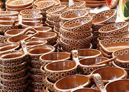
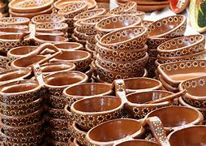
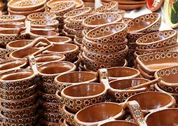

Imágenes del proceso

 

El arte del barro ha sido transmitido de generación en generación, preservando técnicas ancestrales en Michoacán.

El barro tradicional es una técnica milenaria utilizada por artesanos purépechas en Michoacán. Con un proceso manual que involucra la recolección de arcilla, modelado, secado y horneado, cada pieza es única.
Este oficio no solo representa arte, sino identidad y cultura. Las técnicas han sido refinadas con el tiempo, incorporando diseños que reflejan la cosmovisión indígena.